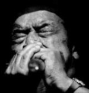
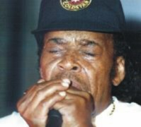
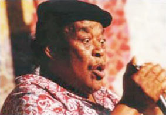

Когда говорят о блюзе на губной гармонике, то на ум, прежде всего, приходит имя этого человека - James Cotton. Человека сочетающего в себе ритмику Sonny Boy Williamson, мастерство Little Walter, чувство свинга Big Walter Horton. Он прошел школу Maddy Waters, учился у самого Sonny Boy Williamson II, выдержал жесткую конкуренцию блюзовых гармошечников в Чикаго и по сей день остается одним из самых известных исполнителей на этом инструменте.
Официальный сайт: www.jamescottonsuperharp.com
Слушая блюзы, по радио и в среде рабочих хлопковых полей, юный Джеймс так впечатлен этой музыкой, что в возрасте 9 лет уходит из дома, чтобы брать уроки игры на гармонике у самого Sonny Boy Williamson II. Позднее, став уже довольно зрелым музыкантом играет с такими гигантами блюза как HowlinWolf, Junior Parker, которые оба тоже были гармошечниками. В середине 50-х годов записывает несколько синглов на фирме “Сан”, под руководством легендарного Сэма Филлипса.

В 1955 году в его музыкальной карьере наступает перелом - его приглашает в свой бэнд Muddy Waters, звезда и духовный отец послевоенного чикагского блюза. Это моментально поднимает музыкальную репутацию Коттона, что делает его востребованным на многих записях других музыкантов, ставших уже классическими, хрестоматийными.
В период увлечения белой молодежи блюзом, Джеймс и тут оказался на гребне волны, приняв участие в записях ведущих блюз роковых исполнителей, выступая с ними на концертах.
В 1974 году записывает, наверное, свой наилучший альбом “100% Cotton”, который является показательным с точки зрения исполнительского мастерства игры на губной гармонике.
В 1984 году Коттон выпускает свой знаменитый, номинированный на Грэмми диск “High Compression”, который демонстрирует движение музыканта в сторону современного звука.

В 1990 году на “Аллигаторе” записывает альбом с тремя другими разными по стилю, но близкими по духу гармошечниками - Carey Bell, Junior Wells, Billy Branch.
В 1996 году получил премию Грэмми и высшую премию в области блюза WC Handy awards за альбом “Deep In the Blues”. Альбом интересен тем, что в его записи принимали участие столь разные музыканты: контрабасист авангардного джаза Charlie Haden, гитарист современного блюза Joe Louis Walker и бесподобный пианист, играющий в манере классического чикагского блюза - David Maxwell.
В конце девяностых, из-за проблем с голосовыми связками, по совету врачей, вынужден отказаться от пения, с тех пор, в записи его альбомов в качестве вокалистов принимают участие исключительно приглашенные музыканты.
Константин Колесниченко [aka Wheel]
bluesharp.inkharkov.com